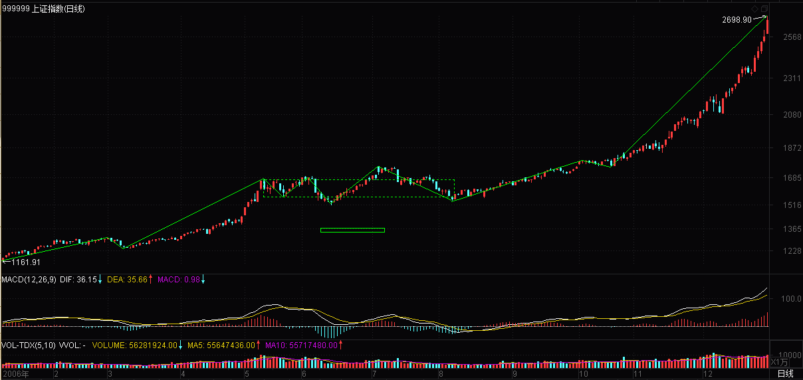

(2006-06-09 17:03:48)
教你炒股票3：你的喜好，你的死亡陷阱！
【韶山映山红】原文配图是上证指数日K线图，新浪博客自动更新为当下的新图。这里贴上当时998开始的日K线图。】
【韶山映山红】当天的近期日K线图。】
【韶山映山红】当天的近期30分钟K线图。】
【韶山映山红】桃花博客配图。】
要世界杯了，在世界杯时谈论股票是一件很无趣的事情，而且，全世界的人都知道，世界杯前后，股票市场几乎都要大跌，这个常识，虽然并不比所有有关所谓庄家的常识更值得常识，但至少有趣，并不像所谓庄家一般无聊。
【韶山映山红】桃花：（国家大型会议，体育竞赛，大的节日前后，股市跌是大概率事件）】
【韶山映山红】静姐03-01】
【韶山映山红】扫地僧：这个常识只具有八卦意义，并非什么常识或者规律】
还可以增加一句的是，足球至少有帅男，而见过的如此之多的所谓庄家里，连长得不那么歪瓜裂枣的都少，这的确是实际情况，并不是开玩笑。【韶山映山红】靠脸吃饭的人，不挣这份辛苦钱。相由心生。】扫地僧：缠师能嘲笑长得难看的，至少说明其本人不算难看，网上有照片，也基本证实缠师长得算标致】
【韶山映山红】第15届世界杯于1994年6月17日至7月17日在美国举行。上证指数当年的表现。】
【韶山映山红】第16届世界杯于1998年6月10日至7月12日在法国举行。上证指数当年的表现。】
【韶山映山红】第17届韩日世界杯于2002年5月31日至6月30日在韩国和日本举行。上证指数当年的表现。】
【韶山映山红】第18届世界杯于2006年6月9日至7月9日在德国举行。上证指数于2006年6月7日大跌。】
【韶山映山红】上证指数在当年的表现。】

【韶山映山红】第19届世界杯于2010年6月11日至7月11日在南非举行。上证指数当年的表现。】
【韶山映山红】第20届世界杯于2014年6月12日至7月13日在巴西举行。上证指数当年的表现。】
【韶山映山红】第21届世界杯于2018年6月14日至7月15日在俄罗斯举行。上证指数当年的表现。】
【韶山映山红】世界杯在月线上的时间点。】
但你的喜好，就是你的死亡陷阱！【韶山映山红】桃花：（追涨，杀跌，逆势，死扛，听小道消息......）】
在市场中要生存，第一条就是在市场中要杜绝一切喜好。【韶山映山红】扫地僧：这个喜好是指不符合市场规则的主观偏好，比如很多人就喜欢茅台，认为茅台如何的有壁垒，如何的垄断，如何的赚钱，但如果时机不对，买茅台未必能跑赢市场，甚至会亏钱。】
【韶山映山红】静姐03-02】
市场的诱惑，永远就是通过你的喜好而陷你于死亡。【韶山映山红】都有哪些喜好？呈现出哪些诱惑？★可以做个专题。以后研究。】
【韶山映山红】从另一个角度看，市场无规律。一旦形成规律就要小心了。】
市场中需要的是露水之缘而不是比翼之情，天长地久之类的东西和市场无关。【韶山映山红】“露水之缘”的佛教故事，世间最珍贵的不是“得不到”和“已失去”，而是把握当下。当下，讲究的是“缘”，而不是“情”。“缘”就是实事求是。】
【韶山映山红】扫地僧：露水之缘就是在恰当的时间恰当的地点遇见恰当的你，对应着在恰当的时机以恰当的价格交易恰当的数量的股票。】
市场中唯一值得天长地久的就是赢钱，任何一个来市场的人，其目的就是赢钱，任何与赢钱无关的都是废话。【韶山映山红】不论是投资还是投机，其本质都是挣钱。“比翼之情，天长地久之类的东西”符合道德喜好的需求，“和市场无关”。】
【韶山映山红】若禅精舍（陈秋明）批注：
其观点一以贯之，在什么样的丛林中，就依循什么样的丛林法则，在证券市场，盈利就是绝对目的，其他所有都是为了这个目的而服务。《教父》中有：“在一秒钟内看到本质的人和花半辈子也看不清一件事本质的人，自然是不一样的命运。”盈利，就是市场的本质。
喜好，并不是陷阱，而所有的陷阱都是根据你的喜好而设计，你的喜好来源于市场上所有崇尚经典图形、指标、组合之类的教材，其根源，来自于你过于单一化的思维方式，一种懒惰的、省事的、教条的：企图寻个万能公式的愚蠢。
】
必须明白，任何让你买入一只股票的理由，并不是因为这股票如何好或被忽悠得如何好，只是你企图通过买入而赢钱，能赢钱的股票就是好的，否则都是废话。【韶山映山红】炒股的本质是赚钱，股票的“如何好”“或被忽悠得如何好”，并不跟赚钱直接挂钩。那么，好与坏就不是必要条件。这就是实事求是。】
【韶山映山红】静姐03-03】
【韶山映山红】扫地僧：这句话要熟读一万遍！买股票之前一定要想清楚自己买入的理由是什么，盈利的逻辑是什么，逻辑成立的边界条件是什么，出现意外情况时该怎么办】
因此，市场中的任何喜好，都是把你引入迷途的陷阱，必须逐一看破，进而洗心革面，才能在市场上生存。【韶山映山红】怎样才能“逐一看破”呢？★以后研究。】
【韶山映山红】桃花：通过编故事，对敲放量，假突破，多空陷阱，跌停板洗盘，涨停板出货。。。。。万变不离其宗，无非就是骗散户低位交出筹码，高位进场接盘，因此要逐一看破。】
【韶山映山红】静姐03-04】
【韶山映山红】博客原文关于“喜好”的内容摘录：
股票，恶之，必察焉；股票，好之，必察焉。由孔子的话，不难明白以上的道理，而明白这道理，就明白投机市场第一原则“只搞能搞的”所依。智慧都是相通的，“只搞能搞的”，而不是“只搞喜欢的”。能搞是需要“察”而得之，不是靠喜好厌恶而来的。随便在市场里抓一个人，问他为什么买手里的股票，一万个人有9999个告诉你因为他的股票如何如何好，这种人能在市场上长久活下来就世界最大奇迹了。本ID从来不觉得自己手里的股票有什么好，只知道他们能搞。
“本ID现在无所谓多空，千万别理解错了。一个中枢扩展该干什么，是有理论的唯一根据的，和本ID的喜好无关。但本ID的结论很明确，牛市的第一波没完，这个观点没变。周线中枢的震荡，不影响这个结论。”
“投资者最大的毛病，就是只有一种思维方式，把自己的喜好当成了市场的现实。按这种逻辑，做多的就永远要做多，做空的就永远要做空，那不有毛病吗？好象这次，春节前的走势，为什么要做多，因为技术上有形成中枢第二段的要求，这就是做多的客观条件，而当第二段出现背弛，就意味着做多的客观条件没有了，继续硬撑着不是有毛病吗？”
“例如，一个30分钟的a+A+b+B+c的向上走势，你不可能在A走出来后就说一定有B，这样等于是在预测，等于假设一种神秘的力量在确保B的必然存在，而这是不可能的。 那么，怎么知道b段里走还是不走？这很简单，这不需要预测，因为b段是否走，不是由你的喜好决定的，而是由b段当下的走势决定的。如果b段和a段相比，出现明显的背驰，那就意味着要走，否则，就不走。”
】
当然，能看清楚自己周围的市场陷阱，还只是第一步，
【韶山映山红】扫地僧：充分了解市场是基础】
更进一步，要学会利用市场陷阱来赢钱。
【韶山映山红】桃花：利用假突破背驰进出场。】
【韶山映山红】扫地僧：当其他人掉入陷阱时，一定意味着他犯了错，利用市场陷阱来赢钱就是利用别人的错误来赢钱，仁慈在这个市场中等同于错误，正确的做法就是当别人掉入陷阱时再趁机上去踩一脚。】
当你要买的时候，空头的陷阱就是你的最佳机会，当你要卖的时候，多头的陷阱当然就是你的天堂。【韶山映山红】通过缠论的背驰分析识别“空头的陷阱”和“多头的陷阱”。】
【韶山映山红】扫地僧：这里也是为后面均线吻系统中的陷阱打下了伏笔】
这市场，永远不缺卖在最低点，买在最高点的人，这世界上没有什么是可以让所有人赢钱的，连大牛市中都有很多人要亏损累累。而市场中的行为，就如同一个修炼上乘武功的过程，最终能否成功，还是要落实到每个人的智慧、秉性、天赋、勤奋上来！【韶山映山红】“修炼上乘武功”不是找到一本武功秘籍就可以了，学习缠论也是如此，需要“智慧、秉性、天赋、勤奋”，自己能做的，唯有“勤奋”。】
【韶山映山红】静姐03-05】
【韶山映山红】扫地僧：太多的人都幻想着找到一本武林秘籍，稍微练一练就可以无敌于天下，说到底就是懒，而懒的根源就是贪，因为是想不劳而获，付出最少获得最多，贪嗔痴疑慢中贪字排第一，而贪字和贫字也只差一点。凡是有一点艺术性的行为，都如同修炼武功，最终武功的高低必然取决于每个人的智慧、秉性、天赋、勤奋，学缠读缠也是一样，这是一条自我修炼的道路，没有捷径可言，也许不起眼的扫地僧所走的路就是最佳的捷径。】
【韶山映山红】扫地僧点评：抛弃个人喜好，就是断掉“痴”念，不痴才能看得清看得懂，这是在市场中赢钱的基本前提。】
【韶山映山红】
Ｑ：如何真正读懂缠论?缠师的话有点太精细了，有点难懂。
李证离：
缠师曾言：市场中的行为，就如同一个修炼上乘武功的过程， 最终能否成功， 还是要落实到每个人的智慧、 秉性、 天赋、 勤奋上来！
如果把读懂缠论当成修炼上乘武功，那么就问下自己是否勤奋的在阅读缠论所有课程？是否知道自己的天赋适不适合缠论？自己的秉性是否符合缠论实践时的要求，是否做出了适当的调整？当对这三者的自知之明彰显时智慧便开启了，你就知道如何真正读懂缠论了。
（待续）
【韶山映山红】亿安科技作手 注：
缠中说禅教你炒股票系列批注（3） (2011-06-08 17:28:17)
本课全局性点评
这篇文章比较短，要表达的东西其实以前写解盘的时候也提过就是市场对大多数人而言永远是一个鱼钩和鱼的问题，那鱼钩上的饵食引诱着你的喜好，直到把你推向陷阱的深渊，但没有陷阱的市场对操作者来说也是种悲哀，市场的过度反应或者说涨过头，跌过度，基本上都是因为有人在弄陷阱，而高明的猎人就会利用这些陷阱获利，比如空头陷阱对于一个要买货的人来说就是个天大的利好，但市场中没有太多高明的猎人，所以大多数时候空头陷阱会让大批量的人割肉，留下所谓的“散兵坑”，这当然是大部分人的悲哀，但这却是市场的规则。
而陷阱的构造一定会在图形上留下痕迹，猎人就可以循着这痕迹利用陷阱，最终达到获利的目的，评价一个操作者只有市场，除了市场之外没有任何第二方可以评价操作者了。而评价一个股票的关键是它能不能让你赚钱，当然这里面就涉及很多主观性的评价了，因为有的时候同一只股票，有的人可以赚很多，有的人却赔的稀里哗啦。当然即使个股的操作过程中有主观能力的差别但依然可以客观的话来评价一个个股的好坏：在你的操作级别上出现买点的股票就是好股票，否则就不是，如此而已。
猎人路线图：第一步、识别陷阱。第二步：利用陷阱。】
【韶山映山红】若禅精舍（陈秋明）注：
05年大牛市，个人成绩就可以说是亏损累累，回头看来，被贪嗔痴牵着到处跑，每天都在追逐上涨，而资金永远是在下跌。
市场中的行为，如同一个修炼上乘武功的过程。在市场中，技术其实是最不重要的，最后比的都是人自身境界的高低，当然，这并不一定要和市场中所有人比，最重要的是在市场中的每一天，都是在和自己比，这才是最难的地方。
尤其是刚进入市场的新人，包括已经在市场里摸打滚爬几年的人，都可能存在一种思维：没有盈利是因为没有得到很厉害的秘籍，没有掌握某一项或者几项固定的买卖类型。而其实这一行，与其他行业并没有什么本质的不同，长期的大量实践、思考、总结、犯错、亏损、刻意训练，就是有所成就的一切，心外求法都是入了魔道。
可能有某个交易者，从来没有听说过缠论，但一样操作的很好，这并不奇怪，就好像亚历山大没有看过《孙子兵法》，但也并不影响他打败大流士一样。但无论是哪种好的交易者，其经历、认知、品性，都会有共同之处。值得追求的、膜拜的、付出的，永远是个人本身。
智慧，是能够看透事物本质的能力，以及在学习中把握住主线的能力。
秉性，决定操作者的主观交易偏好，以及能够沉下心一门深入，幸运的是，这个市场上，充斥了无数五分钟热度的废物。
天赋，其实绝大多数人的勤奋程度，都没有拼天赋的资格，天赋，往往都只是无能之人所找寻的，用来安慰自己的借口，以不至于心理太过于扭曲而崩溃。
勤奋，这很重要，但并不是最重要的，排在最后很有道理，但这是基础。缺少智慧的勤奋，永远只知道爬山，而永远找不到上山的路。但缺少了勤奋，一切都没有意义。
】
【韶山映山红】南无月光如来注：
在市场中我们的喜好有以下几种情况：
1、我们曾经做某只股赚了钱，就念念难忘该只股票，把它列入自选股，希望经常炒作它。如果技术熟练，能把握时机，也是就赚钱的机会的。但任何一个股票都有它的波动规律的。此一时，彼一时也，入点不对就只有挨套的份。
2、听股评或别人推荐某股最终能涨到某个价位，而不管其技术走势如何，追涨买入，最终与该股白头到老。
3、该股基本面不错，是绩优股，尽管在走明显的下降通道，用做长线来安慰自己。
4、一旦浅套，就步入深套，斯守“终生”。
只有赚钱的股票(也就是后面缠师要讲的有一二三类买点的股票)才是值得介入的，否则就是你的死亡陷阱。当然也许你持有的时间足够久，会死而复生，从复利角度讲，时间成本也输不起啊。
http://blog.sina.com.cn/s/blog_60c36c130100hxss.html 】
[匿名] 开心
有理有理，茅塞顿开啊，多谢多谢！此处无情胜有情啊…
2006-6-9 17:43
[匿名] 墩子
读后感
前面几课 姐姐没说理论, 以前我也觉的多余,等经过了3个月的磨练,回头看, 才能领悟姐姐说的意思.
不能不看.
2007-3-28 19:30
[匿名] laser
一直在学习老师的理论。
本课对我的工作、生活以及世界观影响极大，多谢老师。
2007-4-15 23:56
[匿名] 龙游苍昊
学习过了.
总结:
投资的唯一目的要获利,而不是当股东.
但不能因利益的诱惑而丧失了对市场趋势的把握判断能力.
只有修炼出火眼金睛才能看穿画皮.
2007-4-26 12:56
扫帖
这几面的课,越基础,越是要谨记,多读!多思!
2007-9-19 23:22
重新来学习，总是在惨败后才知道学习，
我是08.1月接触缠论的，但是当时一遍都没有看完，同时反感缠的以性说事情的口气，也没有看明白，用别的炒股理论做指导，直到现在，在大盘下跌70%的情况下，输的一塌糊涂。别的 理论介绍的买点进入时，反而是行情的终点。
比较经过，缠论的确非常好。无论是牛市，熊市，都有可操作性。都能盈利。现在我是读过缠论n次后的复习，每次都有新的收获。我顿悟了缠论不过才有半月的 时间。不过我又有信心把我的损失补回来。
希望我的经历能够让有缘分的看到，能够看到缠论并学习掌握，是最幸运和幸福的事情。。
以上是我的心里真实的感受，和同学一起共勉
2008-9-28 13:16
用户0
禅师好，从新读读吧，最近这是在这个问题上出现了不应该有的失误，外围因素干扰太大或者说目前抵抗力太差，内功不够，稍有风吹草动就容易跑偏方向。继续修炼一下内功了，至少很多时候要关键看内力的。
在市场中要生存，第一条就是在市场中要杜绝一切喜好！
场中的任何喜好，都是把你引入迷途的陷阱，必须逐一看破，进而洗心革面，才能在市场上生存！
技术的当下性！
买入股票不是看喜好而是看技术
2011-7-25 22:30
智慧、秉性、天赋、勤奋，
勤奋是后天可以做到的，智慧是后天努力可以或多或少有所得的
秉性和天赋先天的，难道成功与否，真的一半靠天命，一半靠后天的努力？不由想到清赵翼的诗：少时学语苦难圆，只道功夫半未全。到老方知非力取，三分人事七分天。
当然还有一途，就是改变自己的天命，当然这在也是最难的了。这也许是缠师指给的路吧
2012-5-27 16:35
(2006-06-09 22:23:41)
男人就是用来消费的，当然，很希望发现男人消费之外的用途，但一直没找到。男人的用途，战争时是一堆堆的白骨，最终都肥沃了土地，维持了生态的平衡，这大概是男人最值得骄傲的用途了。除此之外，男人的用途中还有一种已被冠以这样的名字，和某种呱呱乱叫动物紧密地相关，这大概是和平年代男人的唯一用途了。
但是，世界杯，这无硝烟的战争，使得男人的意义得到终极的提升。只有在世界杯里，才可以发现，男人除了当炮灰和某种特殊动物外，还可以有如此美妙的用途。二十二个男人，为了证明自己不是一个球而对一个球进行围追堵截，这是现代男权社会中最有象征意义的事件。必须补充的是，这些企图为球而非球的男人最终得到的最高奖赏是一个被手抓着的球，男人的球当然是永远逃脱不了这被抓的命运！
男人算不算一个球，都不影响世界杯将男人消费到底的结论，这一点也如同男人被消费的不可逆转命运一样不可质疑。从今晚开始，世界大同。大同世界当然只是废话，但世界却真的可以大同，例如，今晚开始的一个月里，世界大同于男人的被消费中，更准确的表述就应该是，世界大同于对被球而球的男人的彻底消费中。
消费男人吧，尽情消费男人，至少在这一个月里，男人的兴奋为被消费而存在。而这种兴奋会通过图象传遍世界，即使在日常男人的特殊行业里，也不可能有这样的特殊待遇了。今晚，男人因球而男人；今晚，男人因男人而被消费；今晚，男人因被消费而荣耀！
【韶山映山红】第18届世界杯于2006年6月9日至7月9日在德国举行。上证指数于2006年6月7日大跌。】

(2006-06-11 12:41:18)
天池
谷幽清暑气
壁峭径盘蜒
玉镜浮空半
冰峰出地缘
舟行分日影
浪叠散池烟
远坡花灼灼
歌舞伴胡弦
虎丘
虎丘山下吴王墓
古木苍然噪夏蜩
碧草长阶云寂寞
灰墙倾塔气森萧
三千宝剑埋荒土
半百雄心化怒潮
溅血未干鱼腹刃
浣纱溪上越歌撩
泰山
泰岳耸然齐鲁隔
遮天坼野海临东
林沿晓夕冈崖断
山势阴晴草木融
寂寂盘云疑作雨
亭亭过日忽为风
残霞影拂秦皇石
畴昔曾看汉武雄
望海台
夕气萧森望海台
穿空雪浪走惊雷
秦皇余迹何丘土
魏武残碑几度苔
千古风云随水逝
漫天星月逐潮回
兴亡尽入樽中酒
对饮豪歌莫计杯
我是乌鲁木齐的,去天池很多次,请问是什么角度拍的?感谢你把新疆标志之一的风景拍的这样美.你字里有毛伟人的气势.也有杜甫的诗的现实提示?厚重的文气里宣泄的很豪迈....欢迎礼尚往来..
2006-6-11 13:37
[匿名] 叶嘉莹
看的出来,你的旧学功底不错,诗写的也很工整.
写诗,是诗人表达情感的一种方式,往往由心而生,有感而发.如辛弃疾所说,为赋新词强说愁,为写诗而写诗往往是很难写出好诗的.乾隆一生写了两万四千多首诗,都写的很工整,没什么毛病,但没人承人他是诗人.
你的诗也一样,很工整,看不出什么毛病.但正因为如此,旧诗的一些条条框框束缚了你的手脚,诗看起来显得呆板,没有生气,缺少韵味和意境.
现在写旧体诗的人少了,你能写的很工整确实很难得.但现代人写旧体诗往往是自娱自乐的一种生活态度,很少拿出来示人的.因为旧体诗很难适应现在的语言环境,同时也无法再超越古人.
看你的博客上常常写些旧体诗拿出来攀比,实在是贻笑大方了.
2006-6-18 18:54
楼上有人说上面的留言是叶老师的，是模仿的有些象，但最后一句绝不可能是叶老师的口气
我有幸听过叶先生几个月的课，那真是中国女人的典范。中国女人，有两类典范，一类，就是普通的女人，没受过什么教育，但任劳任怨，勤劳朴实，养育了这个国家和这个国家的男人，如我们的奶奶，母亲这些普通中国女人；另一类，就是家学渊源，知书达理，大家风范，叶先生就是这后一类。从她嘴里评价别人是贻笑大方，哪怕是这个人真的水平很差，也不可能。有次课下，有个同学拿自己写的诗给叶老师看，我在边上，就听叶老师一句一句给那位同学评奖，而且偶尔个别字，还会夸奖一下，搞得那同学自己都不好意思。那位写得诗，我都看不上，更不可能和小缠的相提并论，但叶老师并无任何嘲笑讽刺之意啊。
以叶先生的诗词修养，对小缠的诗词，自会有公论。
2008-4-21 01:18
不过，现在中国女人，又多了小缠这类新典范
中国男人大可以不服气，但请拿出干货来
2008-4-21 01:20
贻笑大方这四个字，如果从叶先生的嘴里说出，只能是一种情况，叶先生自己评价自己的时候。
2008-4-21 01:32
(2006-06-12 20:23:07)
孔庆东是谁，本不大知道。【韶山映山红】孔庆东，孔子第73代传人。北京大学中文系教授，钱理群的硕士、严家炎的博士。】
第一次听说，是在一个私人聚会里，一北大教授说现在的北大教授什么人都有，例如XXX、XXX、XX，其中就点了孔某人的名字，最后还加了一句，连XXX都不如。（最后一个XXX是一种职业，由于不雅，还是XXX吧）。
当时只觉得，这可能是因政治等观点不同而文人相轻。后来孔某人开始在电视上晃悠起来，一个不变的招牌就是什么孔老N1的第N2代孙。这也不奇怪，老鼠的儿子也不一定要打洞，只要真有本事，孔老N1*N2的N1/N2爷爷又能怎样？
但今天，偶尔看到孔N2代孙子在网上大肆晃悠的所谓七律，不禁要说：孔庆东、北大，真丢人！
北大中文系，号称在国内数一数二，也是北大数一数二的王牌系，因此对其中的教授，有一个基本的水平要求，当然就一点不过分了。既然是七律，而且还当成自己的得意之作来晃悠，那至少不能挂羊头卖狗肉，怎么都应该整一七律出来。然而，且不说即使现在石油紧俏，其中的句子也不应该油气十足，就算最幼儿园的平仄和押韵，这北大中文系的才子教授也竟然不合格。不妨拿其中一首格律问题最少的，粗略分析一下：
过桥（孔庆东）
竟日游仙乐九霄，此身忽到奈何桥。
丰都城里千朋唤，伊甸园中群鬼招。
挑尽滑车不觉累，望穿铁壁叹徒劳。
藏冰埋火销神剑，匹马西风听大潮。
请问孔某人，知道七律必须是平水韵吗？知道二萧和四豪韵是不能通押的吗？知道“劳”字出韵了吗？知道入声字吗？知道“滑”是入声字吗？知道“挑尽滑车不觉累”不是律句吗？知道对仗不能合掌吗？知道“不觉累”不能和“叹徒劳”对吗？还有一大堆毛病，不说了，自己找去！当然，孔大教授也不是一无是处的，至少告诉了我们这样一个历史故事，就是亚当、夏娃走后，本来只剩下一条蛇和几个苹果核的伊甸园终于被一群鬼给攻占了！
古人要藏拙，今人爱献丑，这大概就是对孔某人之类现象的基本描述。上面也仅仅就最基本的格律问题说说，至于诗本身的问题，明眼一看就明白。诗就是诗，企图在诗里附加一些其他玩意，更为附加而附加，便如同某种特殊行业一样了。既然这么喜欢用诗来玩这类玩意，那么建议孔某人以后就到观里写点什么签呀符呀的，这大概更加合适。
当然，还可以继续说说什么鲁迅之类的，反正那什么鲁迅就那水平，都是喜欢用什么洗脚之类暗示点什么的货色。而现在，舔舔五四竖子之流的脚就可以教授而叫兽更叫售了，这大概就是现在的孔某人之所以孔某人，北大之所以北大的最根本之处。
【韶山映山红】2006年6月12日上证指数日K线图。】
【韶山映山红】2006年6月12日上证指数30分钟K线图。】
(2006-06-13 16:07:07)
整理文件，无意中发现一些10几年前小学和初中写的白话诗，有点好玩，慢慢整理出来。先来一个与死亡主题有关的汇集。
一
再會了，這令人心碎的土地，我將登上
死亡之舟，愉快地駛向一切未知的港灣。
那裏，每顆冰冷的心靈都在盡情擁抱無邊的黑暗，
用身上可憐的熱量去溫暖廣漠的天宇；
那裏，沒有美味佳肴，只有毒食鳩酒，
人們享受著無盡的死亡，也從不懼怕，生的來臨。
那裏，又有什麽可懼怕呢？
人們唯一的財産就是死亡，
佔有著不佔有，享受著不享受，
在變幻時空中尋得永恒的安寧。
死亡的神舟，快揚起你永動的風帆，
引領我愉快地奔向那個無邊的樂園。
二
鐘聲響了，多麽和諧、令人陶醉，
仿佛來自心靈深處一絲絲的顫動，
死神的喪鐘，預示著永恒，
預示著一個，全新的天地。
不必驚慌，也無須害怕，
死神溫柔的雙手將你的雙眼關閉，
天使奏著仙樂前方飛馳，
通往冥幽的路上開滿醉人的鮮花。
忘卻吧，人間一切的煩惱、憂愁，
你的靈魂高高飄向雲天；
抛棄吧，肉體的一切貪愛、欲念，
你的心靈融化整個宇宙。
死亡，苦難人生永恒的神話，
在你的指引下，飛越、昇華。
三
我在嘔吐，盡情嘔吐，
將無盡生命連同希望的
哀樂，一腦兒來傾吐。
我瘦了，象根枯枝，
無時無刻的哀痛使我
與死神結成了相知。
沒有眼淚，沒有歡笑，
靈魂早已吐盡，而這皮囊，
將是死神最後的佳肴。
死亡，死亡又有什麽可懼怕？
那只是一次長遊，永無煩憂。
四
死亡，這與生俱來、由上蒼播於心頭的種子，
在秋天，成熟的季節，結出了——碩果累累。
春天，這死神之種，慢慢萌發，
嫩嫩的芽兒綠得象幽靈的碧眼；
然而，夏日來臨，死亡從流動血脈中
無情地吸取生命的甘露，蓬勃地生長。
現在，終於成熟了，在秋季，死亡
象一個熟透的蘋果，紅得令人心碎。
它所植根的沃土，那曾充滿鮮血活力的心兒，
早已變得蒼白無力，象片黃葉瑟縮秋風之中。
最後，嚴冬來臨，生命與死亡
一同走入，那一片無邊的寧寂。
五
赤裸走出生命最初的搖籃，
隨即面對一片蒼白與寧寂，
一切是那樣的虛幻、飄渺，
另外的世界，陌生、無常。
穿上素服，走入熊熊烈火，
頃刻化作白灰、形神俱散，
經歷的一切，如此的遙遠，
仿如從未發生便永已逝去。
生命的迴圈，人間的鬧劇，
無情戲弄每顆迷惘的心靈。
【韶山映山红】2006年6月13日上证指数日K线图。】
【韶山映山红】2006年6月13日上证指数30分钟K线图。】
[匿名] 宁儿18412
读着你的文字，突然有一种想哭的冲动
这种感觉已经好久违了
缠，就是蛇吗
第一次遇见你
第一次
因为无从相识的忧虑而
没有缘由地惊恐
然而
只是一种知心
一个熟悉的陌生人。
2006-10-8 01:01
[匿名] 白痴天才
说到死亡，我可真是白痴了，好像最近才会想到死亡，而且不觉得那么紧张和恐惧？看来悟道之中必要参透生死，不惧死亡如何参透死亡，我还没上路哟！
2007-11-28 21:48
[匿名] Thorodin
缠妹好：
未知死，焉知生！
小学二年级就曾在晚上睡觉时躺在床上用小刀子顶着肚皮要自杀，但是没有行动，因为这臭皮囊的生命价值尚远未释放，吾人尚未在这世间闯出一个万儿来......于是果断收刀至今！
本是不该来到这个世上：因缘组合、时机规划、政策控制，但吾人冲绝一切，而且甫一出生即抓牢准生证以明示大驾光临，虽然黑户了半年......
看到你的少年诗篇，重忆几许往事？！
人生一梦，向死而生......
2007-12-21 23:52
[匿名] 爱缠姐
[匿名] Thorodin 2007-12-21 23:52:36
小学二年级就曾在晚上睡觉时躺在床上用小刀子顶着肚皮要自杀，但是没有行动，因为这臭皮囊的生命价值尚远未释放，吾人尚未在这世间闯出一个万儿来......于是果断收刀至今！
============================
哈哈，我可没有你想的那么多，
面对没有办法交的空白暑期作业本，我拿上剪刀靠墙根，比划了半天，不过……
那个时候也是小学二年级，那个时候不懂那么多大道理，只是怕疼。哈哈
2007-12-23 20:27
[匿名] 爱缠姐
修正一下，是背靠墙根，正好镜子反射阳光对着胸脯，然后剪刀对着胸口……
其一，那个时候家里人管的严，刀具之类的高高挂起，是很难作为凶器的
其二，主要是剪刀在缝纫机跟前，好拿，并非为了当东方不败
2007-12-23 20:31
想现实与虚拟完全隔离是不可能的。
就象相与心不能完全分离一样。呵呵。
博主在博中已经多多少少揭露了现实中的他。
当然这都不重要的，重要的是你和他有什么样的缘，你能用到他的理论几分。呵呵
2010-4-17 12:20
先生好像十几年前就开始炒股了吧？我怎么老觉得诗篇之（一）有一种在说投身于股市的隐射？
2010-11-26 09:51
还是我太铜臭了？
先生不喜欢和人打交道（在投资方面），所以只喜欢投资于股票和期货。实业的投资环境与人性让缠主觉得这是个令人心碎地方，所以他决定投身股市。股市对大多数人来说是个黑暗的地方，有多少人死在那里？！本身钱就少得可怜，可还是一头扎进这无边的黑暗（广漠的天宇）。他们希望一夜暴富，可是是在饮鸩止渴！别人的死，却是缠主的生！但是只要你还身在股市，你的财富是的你财富，也不是你的财富，佔有著不佔有，享受著不享受！！只有缠主才能在这里，驾着死亡之舟，奔向那无边的乐园！！
2010-11-26 10:07
高人是不是都喜欢思考死亡这类的问题。
像李小龙，生前最喜欢的歌是《当我死去时》。
可到底是因为思考死亡才成了高人，还是天生就是高人，喜欢思考死亡这类问题？
提起李小龙，忽然想到那已没人真正掌握的截拳道，缠论是不是也和截拳道一样，只是在创立者本人身上真正存在过？呵呵，随便说说！
2010-12-2 23:27
(2006-06-14 20:01:09)
【韶山映山红】抱歉，您要访问的页面不存在或被删除！ 2019/03/13 15:03 】
愚民左派的最大特征就是希望这世界是猪的，猪食后的呻吟就是世界的唯一真理，这样，左派愚民的策略才能被策略。因此，在愚民左派那里，朝鲜的专制独裁不束缚，七律的基本格律反而束缚，这是什么，这就是愚民左派的丑恶嘴脸。基本格律的束缚只能显示一个人的艺术功力与修养，而专制独裁的束缚只能显示奴才献媚舔痔的无耻。
愚民左派有一种最可笑的伎俩，就是把反对独裁之类的东西愣要和什么美国联系起来，愚民左派表面上反美口号喊得鸡飞狗跳，心里对美国却有着一种近乎神经质的恐惧。美国这种垃圾国家，就如同一块腐肉里长出来的蛆，只有整天围着腐肉的才关心什么美国蛆虫，在这一点上，左派和右派都不过是一路货色！
当然，孔庆东可以喜欢朝鲜，也可以继续写些羊头狗肉的七律来显示其愚民左派的嘴脸，更可以用一夜朝人来和其同出钱门的、以一夜美人走红的余师弟比拼比拼献媚舔痔的绝技，但中华文化不会再被五四竖子所左右，更不会重回那已被彻底抛弃的朝鲜式铁狱。中国已经中国，中国仍将继续中国，和美国蛆虫无关，更和朝鲜铁狱无关。【韶山映山红】钱门，北大中文系教授钱理群门下。钱理群名言：我们的大学在培养一批精致的利己主义者。 “同出钱门的、以一夜美人走红的余师弟”：余杰，北大中文系硕士，著作有《火与冰》、《铁屋中的呐喊》、《说还是不说》。】
1979年以来的历史已经被历史，中国已经不可能回到1979年之前，现在的中国不管有多少的问题，但一直在走着中国自己的路，企图将中国美国化的右派，和企图将中国朝鲜化的左派，都不过同是一群企图通过痴心妄想来显示自己脑子水量超标的可怜之徒。中国不需要美国化的右派，更不需要朝鲜化的左派，这些非中国的败芽烂种，必须彻底清除！【韶山映山红】企图将中国朝鲜化的左派：孔庆东。企图将中国美国化的右派：余杰。】
【韶山映山红】2006年6月14日上证指数日K线图。】
【韶山映山红】2006年6月14日上证指数30分钟K线图。】
(2006-06-15 15:57:56)
【韶山映山红】很抱歉,该文章已经被加密! 2019/03/13 16:08 】
再次说明一下，这些白话诗的准确写作时间记不大清了，但肯定不超过初中二年级，因为其后除了偶尔情况下，基本不写白话诗，只写古体的，而且初二到高中间，主要写了很多艺术歌曲以及一些钢琴奏鸣曲还有一些最早的交响乐草稿，更没时间写白话诗了。今天再抄写三首上来，保持原貌，没有改动。

少年诗篇：飯堂/寒鴉/太陽
飯堂
坐在飯堂的角落裏，
機械地嚼著、咽著。
身後的人群在喧鬧，
不斷敲打裝食器皿。
嘴，毫無知覺地啃食著，
那些據說能延緩死亡、
昨夜還在蓬勃地生長、
今早仍活蹦亂跳的生命。
明天，這些曾充滿生機的靈物，
將化作僵死皮囊上的幾塊腐肉。
“快吃、快吃！不吃長不大了！”
近旁婦人哄著孩子，充滿愛憐。
淒然一笑，耀眼的陽光中，
寫下了這一首黑色的詩篇。
寒鴉
“爲何你的歌總是如此的悲涼，
爲何你的詩總是這般的淒蒼？
夏日如火的豔陽竟不能使你溫暖，
春光中繁花嬌豔也未曾令你歡暢？
噢，來吧，憂鬱的人兒，
快加入我們狂歡的行列。”
“不，不！就讓我永如那
冬天的枝條天地間嗚咽。
北風凜冽，在肆意地蹂躪大地，
酷雪嚴寒，在無情地埋葬萬物，
爲何又偏要百靈般無憂的歡戲？
還是讓我死神般站在那荒涼的墓塚，
披著黑色的袍服，提著長長的素棍，
在明媚春光下爲人類敲響不詳的鍾。”
太陽
噢，太陽！你張開這無形的金網
籠著世間萬物，窺聽著、監視著，
你憑什麽！你的光明，你的溫暖？
你照耀下，禽獸用楚楚的衣冠
掩蓋他們體內無法壓制的肉欲，
堆起滿臉笑容，嘶喊刺耳高音。
而你的溫暖，激蕩著無邊的淫樂，
在你的熱風中，人們每個器官都
張開那血紅大口爭搶著、撕咬著。
啊，太陽，你憑什麽這樣高高在上！
僞善伴隨你升起，罪惡跟蹤你降臨，
而你，你這世上最大的惡棍、僞君子，
擺出一副恩澤萬物的架子去奴役蒼生。
我是一潭藏汙的腐水，
決不許你來把我幹擾，
快從那王座上滾下來，
世間只有平等的存在！
【韶山映山红】2006年6月15日上证指数日K线图。】
【韶山映山红】2006年6月15日上证指数30分钟K线图。】
(2006-06-16 15:04:15)
秦晖是谁，真的不大知道。【韶山映山红】秦晖，清华大学人文学院历史系教授、博士生导师。】现在连芙蓉无风自摆几下都可以出名，爱谁谁去。【韶山映山红】芙蓉姐姐。惊世骇俗的异类，网红界的鼻祖。如今励志成了白富美，还是一道风景线。】之所以谈起这个名字，并用这个名字造了这样一个句子：“秦晖，小学数学没毕业？”，并不是因为这两个中文字组合起来有什么特别的力量，只不过因为当看到以下类似的言论时，无论其人其名如何名人或不名人，本ID都会用这样的句子招呼：“X，小学数学没毕业？”。而今天，毫无特别地，这个X的变量取了一个叫“秦晖”的值。【韶山映山红】所有人都拿数学衡量，着相了。】
小学数学没毕业的，究竟可以包括什么言论，这并不重要，重要的是，以下的言论就包括其中，特别当这言论被印刷在报纸上，就不得不为此多说几句了。当然，即使这种言论属于小学数学没毕业的，也要引述如下：
“历史过程中的因果关系从本质上来说，只能是一种可能性（哪怕是非常大的可能性）而不是必然性。一种事情的发生“很可能”导致某种结果，但你很难说“必然”导致某种结果，尽管这个可能性也许很大。换言之，历史是一个值得探究的因果链。但这因果不是必然性因果，而是概率性的因果。而明白了历史因果的概率性，就可以推论：任何概率小于1的因果，无限多次相乘后总的乘积都会趋近于零。而这个总乘积就是由所有这些事件构成的长时段历史过程的因果链意义上的总概率，显而易见，这意味着即便每个单独事件发生的因果概率都很高，整条因果链的总概率也将是微不足道的。”
难道这位的小学数学老师没有告诉这位，概率能被概率，首先是要在一个能被概率的空间里，而并不是什么空间都可以被概率的，甚至可以这样说，能被概率的空间只是一种特殊情况。历史，是这样空间吗？谁能证明历史就是这种空间？能证明的都在历史之中，即使这种证明存在，也被历史了。历史概率性的证明，需要其满足所有概率空间成立的公理，而不是所谓“很可能”、“必然”之类的垃圾语言。没有这种证明，后面所谓乘法原理的论述只不过是呓语，当然，现在报纸上呓语是可以人民币化的，这大概就是为什么小学数学没毕业的都可以呓语的关键。
鄙视所有用数学概念装扮自己的这家那家，数学不是为了你们的人民币化而存在的，当你们，例如现在的所谓经济学家们，用各种数学概念人民币化时，首先必须去证明这些数学概念能被概念。而所有的证明，都将归之于最终的阶级立场，就像几何的世界只是能被几何的世界，对于现实来说，能被几何以及能被怎样的几何，才是关键中的关键，而这，就是阶级斗争！
[匿名] 新浪网友
从第一篇看到这里，忽然似乎感觉到缠师教了我一种看待事物的一种方式（嘻嘻，不知道对不对）：放大镜下的事物都有可能是偶然事件，只有不断的缩小倍数，甚至采用望远镜，才有可能看到事物的全貌。但每个人手里的望远镜有不尽一样。
努力学习，博采众家之长，不断更新自己手中的望远镜，才不会被当下手中放大镜说看到的事物所迷惑。（波波）
2010-10-1 12:28
超市里的某些商品便宜 ，并不代表所有商品都便宜。（个人强烈支持本贴末段观点）
对禅师真正的尊敬并不是无条件，不加思索的对禅师在任何时间 任何地点 发表的任何观点都予以全盘支持。
我们要的是禅师 那种怀疑精神 那种科学精神 那种钻研精神 那种天下兴亡匹夫有责的民族精神！
个人认为 一连串的历史事件，如果所取样本时间跨度很长，那么其原点与终点的关系将会是一个很小的概率系数。
虽然张三李四都来自于他们的祖先，但今天有可能只有张三，或只有李四，亦或者都没有，再亦或者李三张四等等不概而论。
就像我们能推出后世子孙如何如何吗？ 虽然可以大致推出 他们将在X——X 之间在地球生活 他们还是人类 他们将继续繁衍等等 但 这些 能算有价值的确定性的预测吗？
个人认为一个对象能不能被概率的根本原因应该是我们对该对象的确定性有多高。 如果历史不被概率， 那么历史就能够被确定，那么我们就能精确预知未来，这可能吗？ 这不荒谬吗？ 呵呵
所以不管“秦晖”有没有小学毕业，个人认为他这次发表的言论大体上是正确的。
虽然某股东持股不到百分之1 但只要他比第二持股经济体多就行了（长时间跨度因果链概率低 并不代表顺应潮流的结果发生率低，但也并不是一定会发生已经发生过的历史）
正所谓， 乾坤之寰宇，万变之瞬息， 成功者们真能找到使自己成功的最初原因吗？最根本的原因吗？
在当下 对于 某对象确定性了解的多少决定了 对该对象预测 计划等一系列活动的成功率。 所以个人认为 历史必然论 与历史偶然论都是不正确 不完备 的。
在下才学疏浅， 有感而发，不妥之处 还望海涵。
2011-5-28 21:14
【韶山映山红】2006年6月16日上证指数日K线图。】
【韶山映山红】2006年6月16日上证指数30分钟K线图。】
(2006-06-17 12:49:47)
爱情，热恋，都是些脑子进水的玩意，本ID不幸发现，竟然在这次找到的少年诗篇中，有如此之多脑子进水后制造的玩意，看来青春期荷尔蒙真是人生最大的毒素，竟然使得十二、三岁的脑子一下制造出这么多的文字垃圾，摘抄十几首出来，权当警示！
一
愛人啊，我竟是如此的貪婪，
無時無刻不在奢望能盡情吸取
你流動眼波中蘊藏的生命甘露
來滋潤我那早已乾枯的心田。
愛人啊，我竟是如此的侈糜，
不假思索地便把你饋贈於我的
厭惡與不解一下子都揮霍無遺
換來感情上難以忍受的空白。
愛人啊，我竟是如此的冷酷
將往昔天使般的幻憶無情打入
我這心靈深處汙血浸浴的牢籠
任憑時光流逝把它漸漸消融
啊，愛人，這就是我——
貪婪、侈糜、冷酷的動物。
二
思念是一朵盛開的花蕾，
思念是一隻濕冷的火爐；
思念是一群善良的惡鬼，
思念是一個燥熱的冰窟。
思念是一幢不倒的危樓，
思念是一輪灰黑的豔陽；
思念是一塊不毛的綠洲，
思念是一片無水的汪洋。
思念是多情人微笑的淚痕，
思念是癡心者真誠的謊言；
思念這個富翁子，身無分文，
思念這位流浪兒，腰纏萬錢。
思念是一支僅屬於愛神的利箭，
但也只有那愛神，才無須思念。
三
陽光從蔚藍的天際灑下，
柔和地浸浴著天地萬物。
裸露的大地上，塵兒
懶洋洋地跳起了圓舞。
地平線上，隱隱地，
有幾朵灰雲在飄蕩，
風兒打著哈欠、伸著懶腰，
輕輕地拂弄，熟睡的枝條。
突然，明亮的大地揚起旋風，
太陽驚亂地撞入迎面的雲網。
可憐的枝兒還未睜開朦朧睡眼，
就被劈頭的雨點打得不住抖顫。
唉！在這上蒼導演的惡作劇中，
我又窺見我那陰晴不定的愛人。
四
我不知爲何對你如此癡情，
愛情之火激蕩，使我不得安寧；
我不知爲何對你如此難離，
大概愛的疑結只能用愛去說明。
怎能忘记那偶然回眸，
清澈的眼波引燃心中熱情，
孤單的人兒得到依靠，
宇宙的神光擦亮迷茫心靈。
啊，愛人，能否將那刻重現，
啊，知友，能否將那刻永恒。
宇宙的靈光一閃而過，
但你，最親愛的人兒，
能否爲我將那刻停歇。
五
這是一首古老的歌謠，
沒有時下耀目的風景，
它是這樣的蒼白無力，
來自一顆破碎的心靈。
人們可能常常流淚，
爲了吹進眼中的細沙，
人們可能不斷淌血，
爲了權名利色的相殺。
而我，我的這雙淚眼、這顆血心，
都是爲了你——咫尺天涯的人兒。
六
哦，爱人，我並不曾想你、夢你，
你的容顔、身影，從未在我心頭留下一絲痕迹；
你的傲慢、無情，也從不曾令我感到半點心傷，
你的一切，對我來說都毫無意義。
我沒有心，也失去了靈魂，只剩下麻木的身軀。
一切曾屬我的都沒有了，再不會有任何的失去，
一切可以失去的，都已奉獻給你，只剩下死亡！
難道你也需要，我的死亡？——
拿去吧，拿去！這是我最後的奉獻，
沒有心，沒有靈魂，也失去了死亡。
七
永別了生命，永別了夢友！
我將遠離這塵世的喧囂，
去到那無憂無慮的淨土，
在茫茫天宇間忘情遨遊。
生命的毒液曾使我倍受煎熬，
死亡的甘露將令我永無煩憂。
如果生著得不到爱情的芳香，
死神將爲我實現一切的願望！
八
我的心靈一片黑暗，只有在歌中才能感到平安，
歌聲來自你的靈魂，象清風拂過我死寂的心潭。
啊，破曉的雄雞！請不要停止你的歌唱，
這腐濁的死水正期盼黎明第一縷的晨光。
九
聽，歌聲多麽的憂鬱，
在哭泣那早逝的夏天，
秋風伴著無邊的落木，
你的微笑又重現眼前。
歌聲來自這心靈深處，
帶著淚水去裝飾笑臉，
象晨光中嬌豔的繁花，
顆顆淚珠來把它裝點。
美麗的花兒，夢幻的微笑，
我的歌聲是你植根的沃土，
如果雨露能使花兒更嬌豔，
我願永遠流淚把你來澆灌。
十
愛人，快用你溫柔的目光撫去我臉上的憂傷，
快用你有力的雙手爲我融化心頭長年的冰霜。
痛苦曾使我舉步爲艱，象一隻羔羊倒在路旁，
不住歎息、無限彷徨，只有你給我生的希望。
來吧，親愛的人，快給我那一片永恒的光芒。
十一
灰色
天空
灰色
窗臺
無力
夢著
淡藍湖塘上高傲的白天鵝
十二
我又，又期盼著與你重溫這美好的日子，
生命的流浪中，我倆固執著彼此的航線，
而那，春雨湖亭，人生滄海的一座孤島，
使得不幸擱淺的你我得到了不期的相見。
沒有火烈的擁抱，更沒有瘋狂的熱吻，
只有默默的冷對與兩心痛苦的相撞。
起錨了！這生命的航遊將永無停歇，
我尾隨你只爲夢會那也許無意的一望。
撐著疲倦的雙目，無奈眺望你遠去的帆影
心中燃燒的烈焰，驅使我忘情地涉波前行
終於，你船激起巨浪把筋疲力盡的我擊倒
我顫抖著撲向船舷用最後的聲音平靜笑道
“哦，愛人，快打開你你那塵封的大門
讓這兩顆相隔的心來一次紅色的長吻。”
十三
曾渡過多少沈睡的白夜，
經歷一切猶如一抹雲煙。
滄藍天際似會飄過幾隻鴻雁，
海邊的螺角喚醒晨光的詠歎。
難道這都是夢般的迷失，
爲何流血的眼中竟幻現
水上那低眉悲歌的天鵝。
除了夢幻，又有什麽值得留連，
卻不是痛苦吹散了幸福的落霞。
巫神的祝福給人以沈醉的安寧，
山嶽的雄峻讓我陷入無盡迷戀。
不必爲流星的隕落而耿耿於懷，
是愛情的热血正召喚它去擁抱
雲霞並無畏地點燃毀滅的烈焰。
[匿名] 开心
数女大概受过精英教育，如此年龄，所想的都是大人的事，一点童真都不见，可见这少年教育绝对是大事，马虎不得，大家不会希望自已的孩子也如此“超凡”吧？
2006-6-17 14:38
[匿名] 缠中说禅
本ID要出家,肯定是去寺院出家,把寺院变成青楼!
2006-6-18 08:33
【韶山映山红】这个不是缠师的留言。当年的新浪博客有这样的漏洞，留言的名字随便写。后面还有几个地方也不是缠师本人。缠师的都带链接，指向缠师博客。带有[匿名]标记的，都是当年没有注册新浪的。注册过的都带链接，这是一个鉴别的方法。 】
石猴
有个困惑：小缠是从什么时候开始转变的呢？
2007-09-05 00:33:28
[匿名] 爱缠姐
应该说，从未转变
所谓极情，情至极致，转为无情
缠姐从小到大，一贯的究根溯源，对于感情的深挖深掘，窥见了禅
通过种种对生活、对事业方方面面的究根溯源，不离不即当下，不离不即为人，方才锤炼出今日的缠姐
不知对缠姐是好还是不好
2007-12-23 20:22
其实这些诗挺好，挺好的，
少年涩涩的暗恋，其实挺好挺好的，
起码，那时候还有恋的勇气和时间
2008-6-28 16:10
[匿名] 新浪网友
情至极致，转为无情。真有几人能摆脱？？
2008-12-4 16:08
缠师小的时候还是对爱情抱有很美好的想法的，但为什么到这个年纪之后，就对爱情出现不同的看法呢，好几遍都说爱情是一种脑电波，没有平常人所说的甜蜜
2010-5-31 17:44
[匿名] 新浪网友
崇禅念缠2010-05-31 17:44:03 [举报]
缠师小的时候还是对爱情抱有很美好的想法的，但为什么到这个年纪之后，就对爱情出现不同的看法呢，好几遍都说爱情是一种脑电波，没有平常人所说的甜蜜
======
并没有很美好的想法，你没见诗中的词语很绝望、很苦痛？我感觉是很向往又不抱希望的那种。如果真有美好的想法还会这样？小孩都是从日常生活中成年人那里最先了解婚姻和爱情，同时文艺作品又是另一种途径，但两者大相径庭。长大以后会觉得这些都不过是欺骗。（追梦人）
2010-8-26 11:18
老师好!
因为有人说您这诗不像是小孩子写的；今天就贴一篇我儿子前几天偶发感慨写的一首、他叫做诗的东西给大家看看。我儿子今年八岁，三年级。
火狐
从出生起
就开始逃亡
有几次幸免
逃出了那黑色的枪弹
可这一次
误入了猎人的陷阱
枪林弹雨
打在他们的身上
垂死挣扎
免不了那猎人的屠刀
一抹红色的血液
染红大地
在那一刻
他们得到了幸福
得到了快乐
从此
那个地方
就叫
火狐之墓
注：一天晚上，因为看见妈妈皮衣上的红色狐狸毛之后发表的感慨，一个字没改动过。
2010-12-7 19:53
缠师有段描述弟弟文章，讲诉弟弟认为只有外婆和妈妈对他好的，不管是不是现实，其实这也是缠师的主观判断，也就是缠师潜意识中也有这种认识的，所以缠师个人也倾向“女性”角度出发，可能也是这样的，，，，，猜想，不过这些都无聊，专心学习股票
2013-4-29 22:50
突然好想知道，好想看看你的过去。于是就找到了这里，看过以后才知道，原来你也有过一个无知的，不知名的梦。
2015-3-8 16:04
(2006-06-18 17:29:50)

卵力，创造世界！
当ED男正充斥着这小小的星球，以球为球的雄性物体，却在制造着所谓精力充沛的弥天大谎。特别在这个月里，全世界的男权舆论正制造着有关男人和球的神话，在这只能通过不断被球而才能球的男权世界中，男人也只能球样地世界性ED了。
明明是卵力创造了世界，但ED男们却谁用谁知道着他们那只能被无限吹嘘的精力，在这谁用谁知道的无名焦虑中，ED男们的所谓精力，已经不用都知道地被全球化笑话了。伟哥以及伟哥类物质的全球化泛滥，只不过是这个笑话中最不笑话的部分。
最新有关这个笑话的全球化流行版本，以一座山的名字被男人着。ED男们，在惊人的卵力风暴面前鸭飞鹅跳，一些企图顽抗，不愿意特殊职业化的ED男们，就这样东施效颦地断臂了。维纳斯的断臂是卵力神圣统治的象征，而ED男们的断臂，象征了无须可象征的象征，那不可救药的哀号。
无论哀号还是断臂，在男人的集合中，ED集合的补集已经不可救药地空集了。ED男几千年无耻的男权统治，只换来一个唯一可能的结果：ED男成为一个非偏正的复合词，数学一点的说法，就是任何有关男的变量赋值中，以ED来代替，至少在目前宇宙可能存在的所有数学空间中，都只会毫无例外地得到相同的结果。男权统治，也就毫无例外地ED了。
像引力等幻化出这世界，精力也曾吹成一个ED权的世界。但引力也有奇点、塌陷的时候，ED们的精力以及相应的世界，从来就、现在更成了一个幻影。如今，是卵力的世界；如今的世界，由卵力创造。世界，已经世界；世界，继续世界。让ED们继续ED，断臂们继续断臂，这些卵力世界的可怜虫们，谁用谁知道去吧！
(2006-06-19 12:08:25)
禽流感的全球化肆虐，并不能成为各国鸡鸭鹅兔们歇业或不敬业的理由。当一只被高高举起的高卢鸡全球化了全球荧屏，敬业也可变得很德国。而法国，不是德国，只为浪漫而敬业的高卢鸡，也只能敬业于制造一场烛光下的漫长大餐，以及一条战火中更漫长的防线。
浪漫，包装着臃懒。法国式的臃懒，不是巴西ET因臃而懒，更不是ET巴西懒了才臃，而是红酒鹅肝所味道了的味道，那一份复杂而纯正的独特。敬业于浪漫的法国男人，当然不是仅仅精液于浪漫的非法国男人所能包装的。法国，总是那么法国，即使希特勒的铁甲，也不会使得法国更德国。
但法国，却经常很英国，并不仅仅为了那已英国了的法国难题。1966年的英国、1998年的法国，32年时空延续的不仅仅是那漫长的海峡。德国式坚韧、US式错误，最终都只是英国式庆典。而这，时空了法国式大餐所烹调的巴西式散漫、ET式崩溃。
出来混，该还的都要还！这，很不英国，更不法国，但很世界。当上帝之手以及上帝之脚1986年了三狮军团，当臃肿却有点ET的加扎徒劳着1990年的眼泪，当有关同一双脚的1998、2002年不同版本都共同证明着男人脸蛋与头发的不靠谱，英国，终于40年地英国了。
而法国，也正40年着法国？450分钟，已漫长了8年的漫长。ET与ED的差距，并不总是很独特的。与独特更无关的是：无论能否ET，都至少不能ED。当那天法国了世界的头换成了今夜韩国了世界的脚，即使非巴西的，ET与ED的差别也不能仅仅被差别了。该还的都要还，还了该还的，法国，尚能法国否？
[匿名] 新浪网友
缠师对足球情有独钟。
法国和巴西的那场决赛，切实很蹊跷。
ET的那个不一定ED哦，看新闻，他很强哦。（波波）
2010-10-1 12:48
其实从这些文章都可以看出，缠师在带我们入门，使得我们不论从哲学还是数学方面都能思考，领悟缠中的缠，各个级别大小不一的买卖点构成走势图，文章从开头到结尾，论语到股票，其他的文章，都是同一种的思想，同一种的结构，缠师说过自己文章不只只是股票，如果你目前只看到股票就从股票开始，其实这个任何文章，都是从思想开始的，教你炒股票系列是技术，而炒股不是有技术就可以的，还要与之相应的交易策略，我称之为思想，也就是说你的交易策略指导你操作，在实际中才能使得技术闪光，而技术导致成果优异翻过来验证交易策略，思想的准确，两者相辅相成缺一不可，这个也就是不同的2个人使用同一种技术操作同一只股票会完全呈现2种完全不同的结果的原因，因为每人的思想是不同的，大家都是独立的个体。
2013-4-29 23:13
(2006-06-19 16:45:17)

鄙视所有对N中工15元不敢买50元就吃醋的人！
【韶山映山红】原文配图是中工国际的分时图，新浪博客自动更新为当下的新图。这里贴上当日的分时图。】
谁都知道N中工万千宠爱在一身，一年多没有新面孔了，突然来了一个新的，大伙热烈一下有什么不对的？值得某些人这么大惊小怪的？鄙视所有对N中工15元不敢买50元就吃醋的人！【韶山映山红】002051中工国际2006年6月19日上市，之前上市的002050三花智控2005年6月7日上市。间隔整一年。中工国际作为全流通发行的第一单，上市首日即被爆炒，发行价7.40元。开盘就17.11元，最低15.50元，最高50.00元，收盘31.97元。】
今天该股90%多的换手意味着，所有中签的人基本都抛了（对手盘包括其中），而且绝大多数都在10几元抛的。【韶山映山红】当日换手94.05%。当日成交45万手，有40万在10几元抛的。】
这就对了，你们10几元不看好，有人要看好，市场向所有人开着，凭什么不能买？市场就是一个斗心理的过程，大家都想一块去了，大家还用不用活了？
下午激烈冲高，又有什么可值得奇怪的，市场上要买的力量大，而由于T+1，没有足够的筹码供应出来，要买几百万股都跑到50元的，这不很正常吗？请注意，今天的均价是在18元，均价并没有大幅上涨，因此任何有关投机的说法都是可耻的！而且今天有快三个小时10几元随便买，自己没买，就企图起哄叫嚣什么监管来捣乱的，鄙视你们！
【韶山映山红】疯狂回放：市场普遍预计该股上市首日开盘价在12—15元之间，然而一开盘就让人大吃一惊——以17.11元开盘，较发行价7.40元大涨131%，这一价格已经远高于市场预期的13—15元左右的定价。值得一提的是，该股首单成交就高达566.87万股，成交金额9699.15万元，换手率高达11.8%。在随后短短30分钟里，该股的成交已经达到3048.76万股了。不过，大量的成交并没有立即让中工国际的股价立即飙升，反而还一度下跌至15.50元。短暂的回调后，开始维持横盘震荡走势，股价一直在18元上下波动。
谁料，下午2点后，突然加速飙升，18元、20元、30元……此时上涨不再以角、分为单位了，该股的上涨速度直接以元为单位！短短18分钟，就已被狂拉到50元，期间涨幅高达140.38%。不过，疯狂过后该股又上演了一场蹦极秀，5分钟后又迅速跌到25元，跌幅达50%。但最终略有回升，收于31.97元，大涨332.03%。
是谁在疯炒中工国际呢？
成交显示，当日合计成交了4514.54万股，其中仅开盘后30分钟里便成交了3048.76万股，从上千万的大单可以看出，这是机构与机构之间的交易，且最初获得中签的投资者几乎都已经卖出了手中的股票。然而，与此对应的是，在下午2点至2点18分短短18分钟里，该股从20.80元涨到50元，可期间成交冷清，合计仅有394万股成交！这意味着，普通投资者很少在此期间追涨。
另外，中工国际成交龙虎榜显示，第四位是银河证券机构专用席位，该席位昨日买进了1979万股，却无一股卖出；第五位是中信证券机构专用席位，该席位昨日卖了1898万股，却未买进一股。很显然，昨日的疯狂，是机构在狂炒！】
中国资本市场中有过太多无聊无端的干预，像327的最后交易不算之类的事情真是世界罕有。市场最关键的就是大家都要遵守规则，这包括管理层，不能按自己的一时喜好而干预市场。就算交易有问题，只能根据交易的问题来处罚，而不是突然改变规则来显示自己的无能。【韶山映山红】327是一个国债产品的代号。1995年2月23日的疯狂博弈之后，上交所在经过紧急会议宣布：1995年2月23日16时22分13秒之后的所有交易是异常的，当日收盘前8分钟内空头的所有卖单无效。利益相关，至今当事各方都是一地鸡毛。虽然侥幸没有在事件中受损，但交易无效这件事让缠师“受到严重教训”，以至于后面在博客里无数次地提及327事件。】
只要符合市场交易规则，包括N中工在内的所有走势，都应该受到法律保护，由于现在的法律观念太淡薄，往往有按个人喜好代替法律判断的倾向，所以必须再次强调。【韶山映山红】规则的漏洞，不是让市场去消化，而是凭喜好去评述、去弥补。“你的喜好，你的死亡陷阱！”】
至于市场中的人，不要自己没份就瞎起哄，看不得别人好不是一个好的市场参与者应有的心态。首先有了一花盛放才可能百花盛开，维护一个只按法律办事的环境，对大家都有好处！【韶山映山红】“看不得别人好”，“不是一个好的市场参与者应有的心态。”修行先修心。】
预告：今晚继续写教你炒股票系列4：什么是理性？今早买N中工就是理性！
开心
有理。赞成你对市场的看法，不能因为有人吃不到葡萄而让所有葡萄都变酸，这是市场最起码的公平原则，我觉得中国的股市的投机机会太少了，这也是市场低迷的一个原因。
2006-6-19 17:11
问宇
无非是又一个烟台万华一天走了几个月的路而已。
市场对付这种狂庄自有市场的办法，既然头一天就把未来几个月的事都办了，散户也被吓死了，那么未来一端时间谁来接呢？剩下的庄家自己用银子接着画线吧。
我们的股市是赌场不是什么投资场，如今的散户都知道这个道理。LZ显然是赢了一把，但也不至于如此雀跃，否则跟猫在那些黑屋里的赌客又有什么二异呢。
2006-6-19 22:03
[匿名] 大象
目前股市已到本轮最疯狂的时候了，中工国际就是一个最好的例子，如果你明天不在第一时间跑掉，接下来将是一个跌停接着又一个跌停！！！按此比价，中小板所有股票应该翻番，但今天中小板指数是下跌的，这说明了什么？？？此文作者是非常不负责的“该股不支持如此高的股价，事实胜是检验真理的标准
2006-6-19 23:55
[匿名] 猿人脑袋
今天在这里叫嚣的
以后都得扇自己了
自己还有500股 还敢出来 你这500股 是赞助股？
估计是40多块追进去的 呵呵呵
现在打低不是为了出货 是为了到低价位继续吃进 第一天追得那么急 庄也没吃到多少 15元进的人根本就不用担心
楼上的是大瓜脑袋
2006-6-23 15:54
[匿名] 大象 2006-06-19 23:55:59
目前股市已到本轮最疯狂的时候了，中工国际就是一个最好的例子，如果你明天不在第一时间跑掉，接下来将是一个跌停接着又一个跌停！！！按此比价，中小板所有股票应该翻番，但今天中小板指数是下跌的，这说明了什么？？？此文作者是非常不负责的“该股不支持如此高的股价，事实胜是检验真理的标准
--------------------
哈哈，历史真是让人感慨。一年前说股市就疯狂的人，不知道今天看到5000点的时候，会是什么样？
所以说大牛市也有人赔的一塌糊涂，大象这种就是，到1万点，他也会赔，还跑来骂人，丢人现眼。
2007-9-5 00:51:48
白痴天才
缠姑娘的洞察力和总结概括的能力的确让人佩服！
2007-11-28 22:40
新浪网友
石猴 2007-09-05 00:51:48
哈哈，历史真是让人感慨。一年前说股市就疯狂的人，不知道今天看到5000点的时候，会是什么样？
所以说大牛市也
----------------------------------
中工上市后的走势跟大象说得非常吻合. 石猴你也太主观了吧! 自己好好检讨检讨吧
2008-2-6 02:05
新浪网友 2008-2-6 02:05
中工上市后的走势跟大象说得非常吻合. 石猴你也太主观了吧! 自己好好检讨检讨吧
==========
我觉得这位挺奇怪的，我检讨什么？
小缠的文章题目很清楚：预告：今晚继续写教你炒股票系列4：什么是理性？今早买N中工就是理性！
标题中大大的两个字：“今早”你看不到？
那天早上十几元左右随便买中工，如果你是早上买的，后面的走势和那位大象说的吻合怎么了？
07年6月中工最高见35，也就是说，用最简单的方法，股票涨一倍，抛一半，拿出成本，到今天，你还是大赚的。
如果那天十几不买，非要50去买，那死了是自己找死，又怨得了谁？
2008-4-21 02:07
中工国际的走势太经典了。可惜只能看到日线图。无法详细分析了。不管理不理性，这票一做错。惨的很。
2008-7-16 16:59
[匿名] 新浪网友
缠老师在中工里说的是另一层意思！市场嘛，就是买和卖，不管多高，只要有人买就是合理的！不管多低，只要有人卖也不能说什么。所以说，市场中有酸葡萄的心理可以，但要保护买卖！
买卖，就这样简单，人家愿意！
2010-3-8 17:12
[匿名] 新浪网友
缠师分析的不仅仅是这只股票。
更深远的问题：管理机制的制定与执行、参与游戏的众生应该有的基本心态与素质等等（波波）
2010-10-1 12:57
呵呵，大家争论来争论去，缠师投机而已，而且投的证监会很没办法。缠也没说那中工的基本面能支撑那价位啊，价值投资，缠啥时候信过这啊。
大象的分析很好，很有道理。但这与缠压根不矛盾，缠在这篇只是在说投机：今天该股90%多的换手意味着，所有中签的人基本都抛了（对手盘包括其中），而且绝大多数都在10几元抛的。
只能说缠很高明，大象也很理性。
2011-7-27 19:28
埋怨下石猴师兄，作为大师兄，小弟是很敬重的。但去过猴兄的博客，貌似对某位所谓高人很谄媚，失去了大师兄的风范。另外，本篇猴师兄确实过了些。
2011-7-27 19:34
教你炒股票9：甄别“早泄”男的数学原则！ (2006-11-22 12:00:00) 帖子后面小缠有如下留言
缠中说禅2006-11-22 12:25:08 [举报]
[匿名] nn
非常欣赏楼主的新思维和大智慧,但有一点不明白,楼主为何说15元多买N中工就是理性?现在我不是想问N中工值不值这个价,我是想知道假如我在那个位置买了,后面的情况大家也知道了,我的问题是在这个长达几个月的过程中应该如何处理才是最佳的操作手法?
==================
开盘就买中工当然是理性的，因为第一只，而且开盘的位置也不太高。后面之所以出现如此走势，是中国特色的管理层所造成的，但开盘15元多买的，后面18、19元随便你出，由于情况发生了意外，当然就要选择退出，这还是上面的原则，买股票一定不能追高，这样一旦发生意外，退出也简单。
=====
楼上有些人谈所谓的客观，这世界哪里来的什么客观，只是把自己的观点刻到客观的牌坊上去
不患，无位，患所以位
2011-9-29 19:13
很多对N中工唧唧歪歪的，首先没看明白这个帖子本身，更没看到小缠在第九课跟帖里的说明，就大头充血，妄下结论，诚可笑又可悯
2011-9-29 19:17
用户0
缠师作为在圈里玩的人，吃透了市里面的规律。不是一般人来看出来的，吃透了，心里明的像镜子一样，才能看出其中的奥妙，昔人已去，无法了解大师所见所听，只能观其言，了解其行，看大师留下的痕迹，市场里试试力，几年之内，过到一定的高度和境界
2011-11-20 20:08
我记得我有个同学当年在49块多买了一手试试，结果不说也罢，调查结果显示全国有3个人在50左右买入.....
2012-10-8 16:34
现象：谁都知道N中工万千宠爱在一身，一年多没有新面孔了，突然来了一个新的，大伙热烈一下有什么不对的？值得某些人这么大惊小怪的？鄙视所有对N中工15元不敢买50元就吃醋的人！
技术面：今天该股90%多的换手意味着，所有中签的人基本都抛了（对手盘包括其中），而且绝大多数都在10几元抛的。这就对了，你们10几元不看好，有人要看好，市场向所有人开着，凭什么不能买？市场就是一个斗心理的过程，大家都想一块去了，大家还用不用活了？
实际中操作的当下：下午激烈冲高，又有什么可值得奇怪的，市场上要买的力量大，而由于T+1，没有足够的筹码供应出来，要买几百万股都跑到50元的，这不很正常吗？请注意，今天的均价是在18元，均价并没有大幅上涨，因此任何有关投机的说法都是可耻的！而且今天有快三个小时10几元随便买，自己没买，就企图起哄叫嚣什么监管来捣乱的，鄙视你们！
这些其实没有长时间的在股市的经验是不能判断，而一个散户最重要的就是技术了，这里有个很重要的数据描述就是90%换手，这个其实看成量，交易分歧，这个 才是看到技术面最重要的，这里缠师讲了：你们10几元不看好，有人要看好，==可惜我现在都是事后分析，估计当下我自己也是糊涂单一个，既然不能创新，就死记好了，目前IPO停发新股有段时间，可以从这个开始有个参考！关注这次上市的第一只股票。股海偏执狂，记于2013-4-29日
2013-4-29 23:34
缠师本文原意并非鼓励大家买入中工国际，只不过以此股举例说明几个道理，一是在市场中要遵守规则，二是只有自己才能对自己的买卖行为负责任。三是存在即是合理。怨天尤人的酸葡萄心理或者期望大救星的心理不可有。
问候缠师，致敬缠师。
2014-11-24 10:18
本课目录
教你炒股票03：你的喜好，你的死亡陷阱！世界杯，将男人消费到底！律诗四首：天池/虎丘/泰山/望海台孔庆东、北大，真丢人！少年诗篇：死亡孔庆东、朝鲜，愚民左派的丑恶嘴脸！少年诗篇：飯堂/寒鴉/太陽秦晖，小学数学没毕业？少年诗篇：脑子进水的热恋卵力，创造世界！出来混，该还的都要还！鄙视所有对N中工15元不敢买50元就吃醋的人！